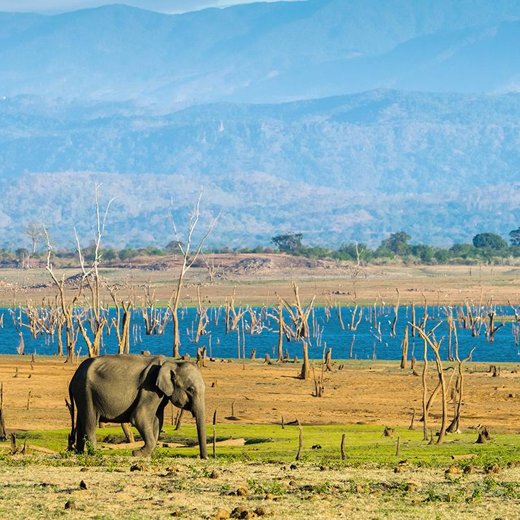
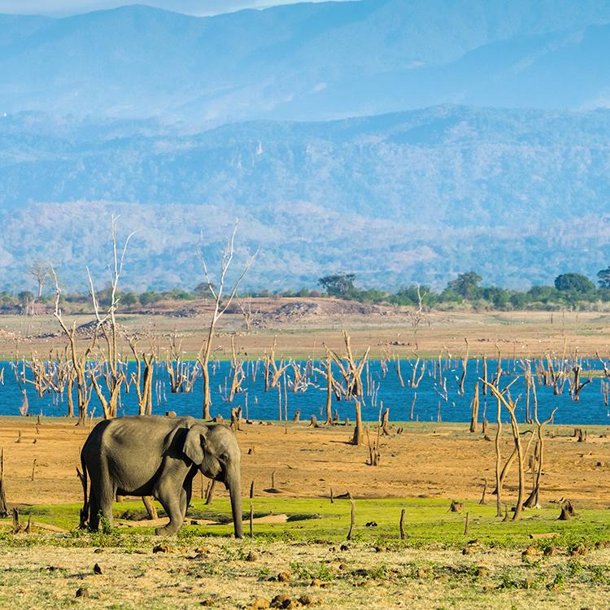
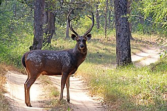

Home Wild life attractions Beaches Activities Heritage locations Hotel details Shop
...Wild Life Attractions In SriLanka...
...1.Yala National Park...
. Yala National Park (also known as Ruhuna National Park) is located in Sri Lanka's south-east area and spans two provinces: southern province's Hambantota district and Uva province's Monaragala district. Palatupana, 12 kilometers from Kirinda, is the park's entrance. The distance between Colombo and the Palatupana entry point is 305 kilometers.

...Wild Life...
. Yala National Park, out of all the Sri Lankan National Parks, provides the best opportunity to see Sri Lanka's diverse wildlife: Beautiful fantailed peacocks in magnificent blues and greens parade about amidst the woods where monkeys hang, leap, and talk; elephants in the bush jungle; crossing the paths and wandering off into the thorny scrub jungle is the park's headline attraction: leopardess
...2.Kumana National Park...
. Kumana National Park, also known as Yala East National Park, is located 391 kilometers from Colombo in the Ampara district of Sri Lanka's south-east.
 

...Flora Of Kumana...
. A dry zone tropical thorn forest surrounds the park's wetland regions. Manilkara hexandra (Sinhalese "palu"), Hemicyclea sepieria, Bauhinia racemosa, Cassia fistula ("ehela"), Chloroxylon swietenia ("burutha"), and Salvadora persica species are the most common plants in the inland forest. Sonneratia caseolaris is the major tree, while Typha angustifolia is the prominent reed, in the Kumana villu. Riverine woodlands of the Kumbukkan Oya are dominated by Terminalia arjuna trees. Ludwigia spp., Nelumbo nucifera, Nymphaea pubescens, Aponogeton spp., and Neptunia oleracea are some of the frequent aquatic species found in the marsh.

...3.Horton Plains...
. The Mahaweli, Kelani, and Walawe are three significant Sri Lankan rivers that originate on the Horton Plains. The plains are known as Maha Eliya Plains in Sinhala. Stone tools from the Balangoda civilization have been discovered here. Grasslands interlaced with montane forest make up the lowlands' vegetation, which includes several indigenous woody plants. As usual mammals, large herds of Sri Lankan sambar deer can be found, and the park is also an Important Bird Area, with numerous species that are not only native to Sri Lanka but especially to the Horton Plains. Forest dieback is one of the park's most serious concerns, and some research believe that it is the result of a natural occurrence.

...Tourist Attractions...

. World's End is the main attraction in Horton Plains, which is a renowned tourist site. Horton Plains National Park had a profit of Rs. 20.1 million (US$ 0.17 million) in the six months ended in August 2009. The park is accessible by the Nuwara Eliya-Ambewela-Pattipola and Haputale-Boralanda highways, as well as the Ohiya and Ambewela train stations.
...Special Wild Life Creatures...
Animal/Plant| Description | Image | Habitats | Food Habits | |
|---|---|---|---|---|
. SriLankan Leopard| . A leopard subspecies native to Sri Lanka is the Sri Lankan leopard (Panthera pardus kotiya). Paules Edward Pieris Deraniyagala, a Sri Lankan biologist, originally described it in 1956.
The IUCN Red List has classed the Sri Lankan leopard as vulnerable since 2020, because the population is anticipated to be less than 800 adult individuals and is likely diminishing. | . The Sri Lankan leopard can still be found in both protected and unprotected regions around the island. | . Carnivorous | | |
. Hora| . Hora trees, which are part of the emergent tree layer in the rainforest canopy, can reach a height of 40–45 meters when fully mature. This tree plays a significant ecological role in rainforests as a dominating tree in the canopy layer. The trunk of the tree is cylindrical and light brown in hue. Make a fruit with two wings that can spread in the wind. This tree also provides a rich source of lumber for construction. |  . SriLanka | . Autotrophic | | |
. Indian Peafowl| . The largest and heaviest members of the Phasianidae family are Indian peafowl. Only the wild turkey, as far as we know, gains significant weight. Despite having a longer train on average than the male of the Indian variety, the green peafowl has a somewhat lighter body mass. Within their native distribution range, their size, color, and crest form make them recognizable. |  . The Indian peafowl has been imported to the US, Mexico, Honduras, Costa Rica, Colombia, Guyana, Suriname, Brazil, Uruguay, Argentina, South Africa, Spain, Portugal, Madagascar, Mauritius, Réunion, Indonesia, Papua New Guinea, Australia, New Zealand, Croatia, and Lokrum Island. | . Omnivorous | | |
. Sambar Deer| . The big, rough antlers are typically rusine, with simple brow tines and forked beams at the tip, resulting in only three tines. In fully adult individuals, antlers can grow to be up to 110 cm long. Only the males, like most deer, have antlers. |  | . The sambar is found across much of South Asia, including Burma, Thailand, Indochina, the Malay Peninsula, Indonesia, Taiwan, and South China, including Hainan, as far north as the south-facing slopes of the Himalayas in Nepal, Bhutan, and India, and in mainland Southeast Asia, including Burma, Thailand, Indochina, the Malay Peninsula, Indonesia, Taiwan, and South China, including Hainan. It reaches 3,500 meters in the Himalayan foothills, Myanmar, Sri Lanka, and eastern Taiwan. | . Herbivorous | |